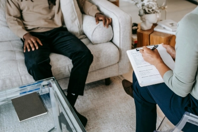

Sobre nosotros
En nuestro centro de atención psicológica, creemos profundamente que la salud mental es una parte fundamental del bienestar general. Nuestra misión es proporcionar un espacio seguro, empático y profesional donde cada persona pueda explorar sus pensamientos, emociones y experiencias sin juicio. Somos un equipo de terapeutas comprometidos, capacitados en diversos enfoques psicológicos, lo que nos permite adaptarnos a las necesidades únicas de cada individuo. Ya sea que enfrentes ansiedad, duelo, desafíos en las relaciones o simplemente quieras comprenderte mejor, estamos aquí para acompañarte en tu camino. Creemos que todos merecen sentirse escuchados, comprendidos y apoyados. Buscar ayuda es un valiente primer paso. No estás solo. Aquí puedes sanar.
